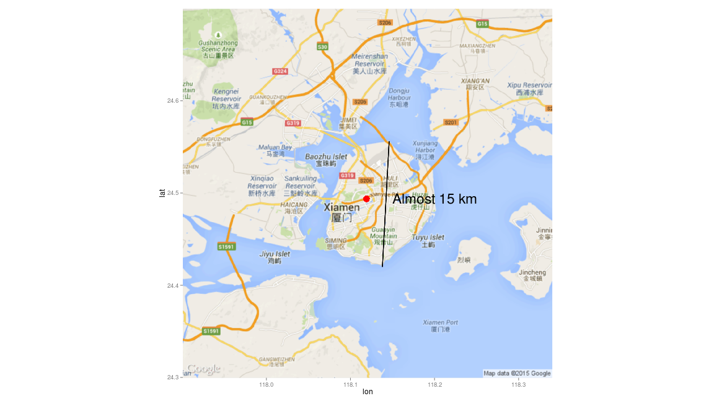

疫学懇話会
王 超辰 Chaochen Wang
2015-09-14 @ 愛知医科大学 大学本館2階 204講義室
Agenda
- 自己紹介-About Me
- 高感度CRP濃度と糖尿病発症
- 家族歴と糖尿病発症
自己紹介 About Me (1)
所属 Affiliation
- 愛知医科大学医学部 公衆衛生学講座
Department of Public Health, Aichi Medical University - 名古屋大学大学院医学系研究科 国際保健医療学・公衆衛生学
Department of Public Health and Health Systems,
Nagoya University Graduate School of Medicine
- 愛知医科大学医学部 公衆衛生学講座
言語 Language
- 第一言語：中国語
First language: Chinese - 第二言語：R
Second language: R - 第三言語：英語，日本語
Third language: English, Japanese
- 第一言語：中国語
自己紹介 About Me (2)
出身： 中国・福建省・厦門市「アモイ」
厦門市
厦門市:本当に島ですよ．

略歴 Profile
2006～2010 上海交通大学医学部 栄養学科
2011～2013 名古屋大学大学院医学系研究科 医学修士課程
2013～2016（予定） 名古屋大学大学院医学系研究科 医学博士課程
2015.4～現在 愛知医科大学医学部 公衆衛生学講座